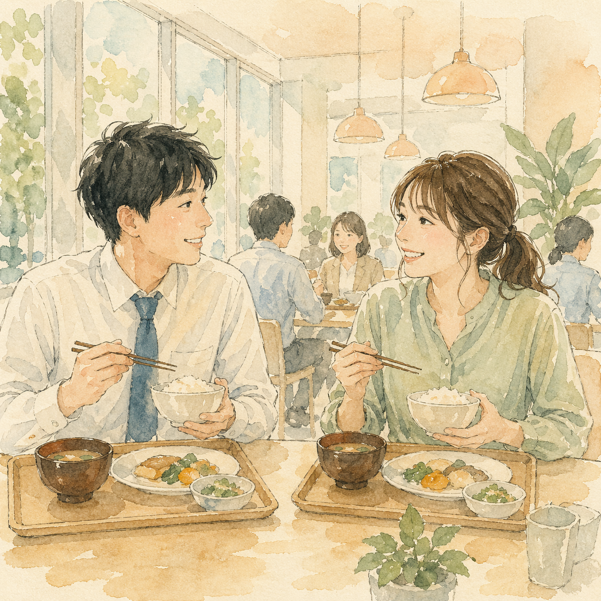
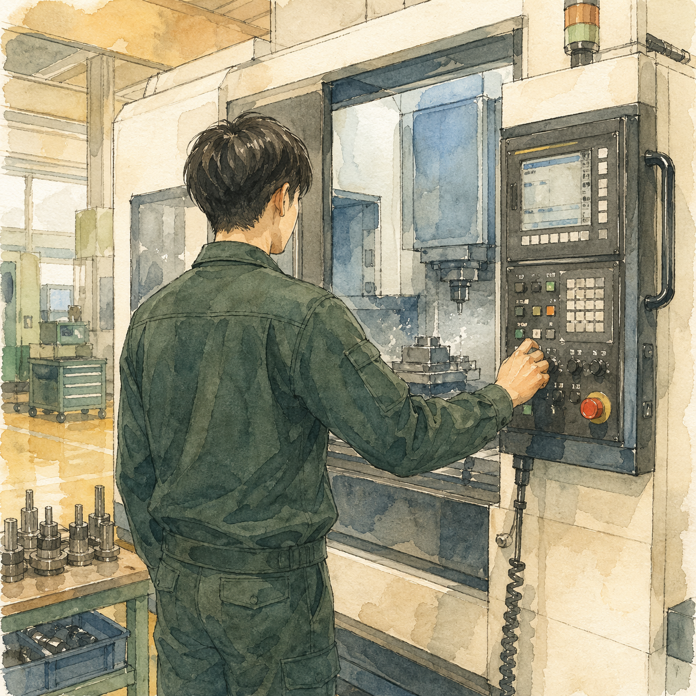
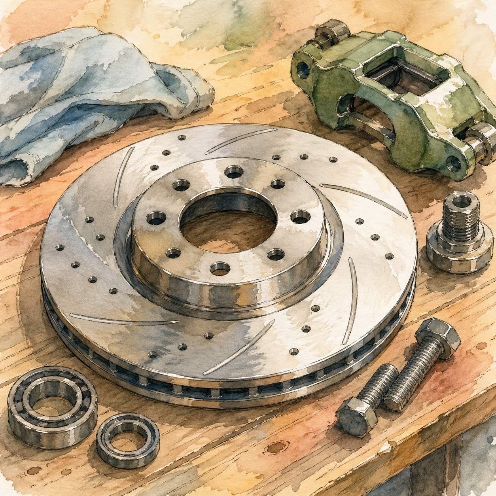
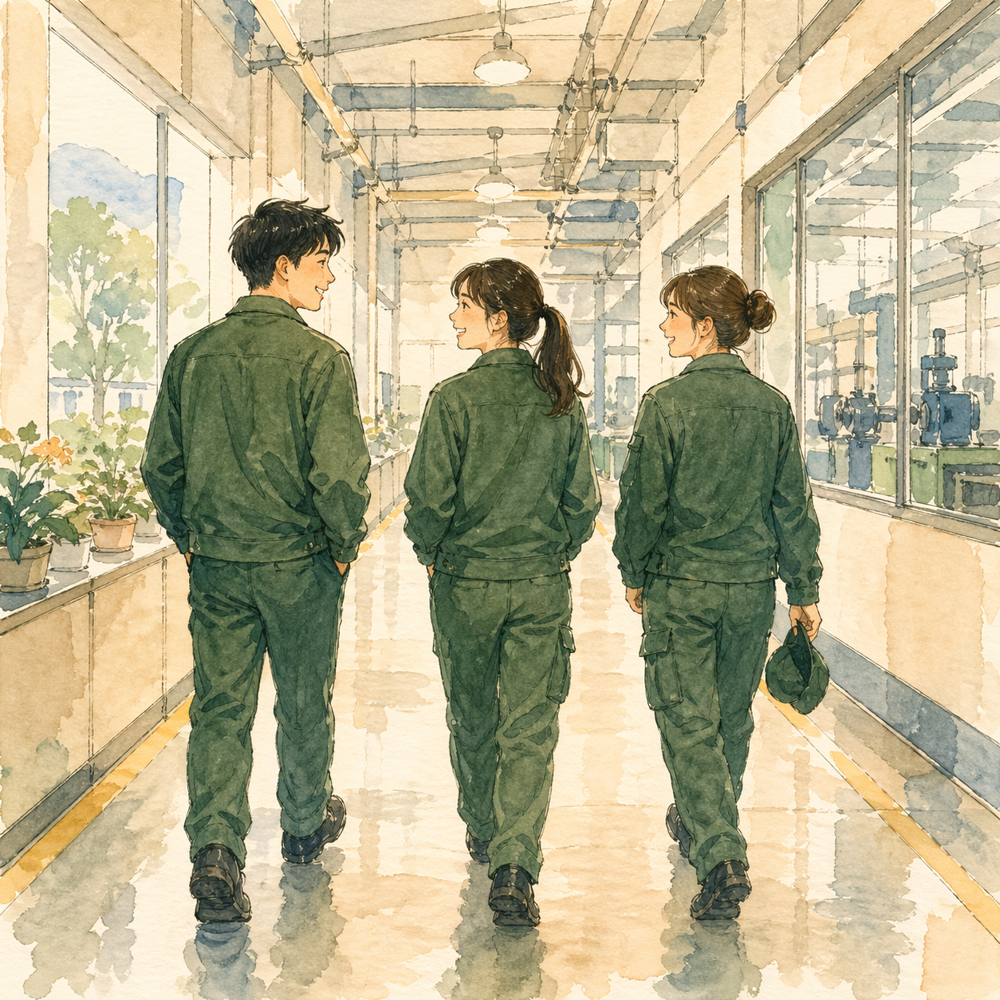
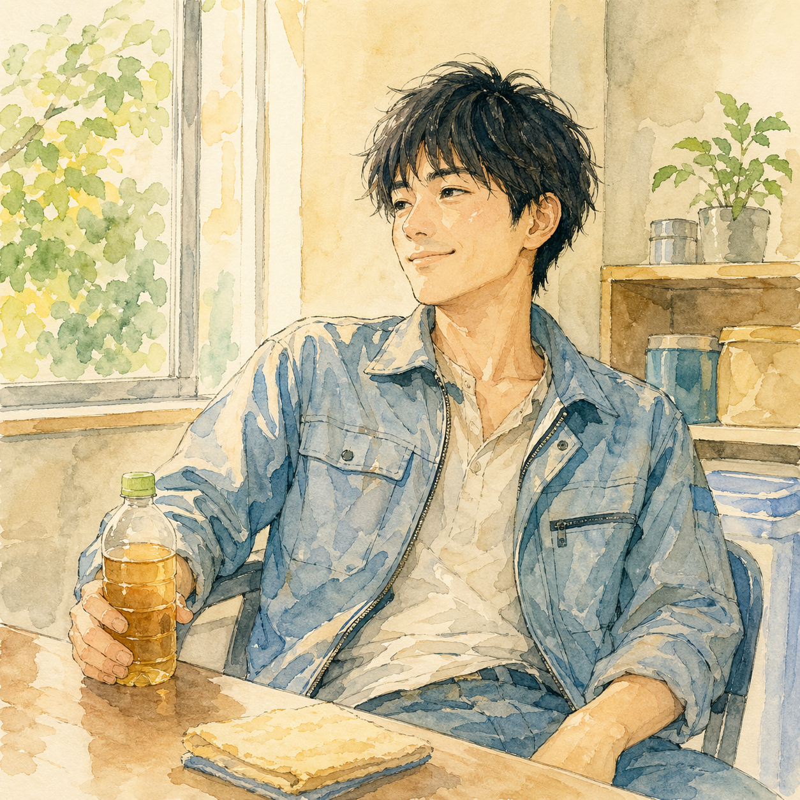
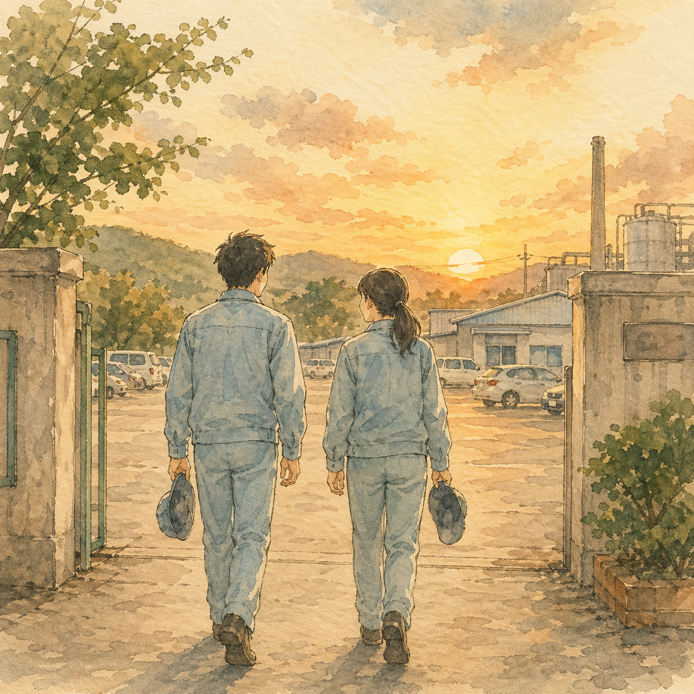

アイシン高丘東北 採用HP(新卒向け) — FV候補イラスト ギャラリー
線画＋水彩タッチ / 1254×1254px / 2026-04-23生成 / 11+1枚
方向性
: 温かい手描き感、相談しやすい文化、緑の作業服、福島・宮城の風土。FVはトクヤマデンタル型の3カラム縦スクロール・パズルグリッドを維持し、タイルの中身だけイラスト化。
01 / MORNING
朝礼で輪になる社員
一日の始まり・チーム感・コミュニケーション
02 / OJT
先輩が後輩に教える
育成文化・丁寧な指導・手元の温度感
03 / EXTERIOR
工場外観と宮城の空
スケール感・地域との繋がり

04 / LUNCH
食堂でのお昼休み
和やかな空気・同僚との時間

05 / WORK
機械を操作する作業員
真剣さ・技術への向き合い方

06 / PRODUCT
ブレーキディスクの手元
主力製品・品質への誇り
07 / OFFICE
オフィスでの立ち話
横のつながり・気軽さ
08 / INSPECTION
検査する指先のクローズアップ
精度・慎重さ・職人気質
09 / SCENERY
宮城の田園風景
タイムアウトで未生成
（単体リトライ候補）

10 / TEAM
チームで工場内を歩く
一体感・動きのある日常

11 / BREAK
休憩中の笑顔
人間味・リラックス感

12 / LEAVING
夕日を浴びる退勤シーン
一日の終わり・達成感